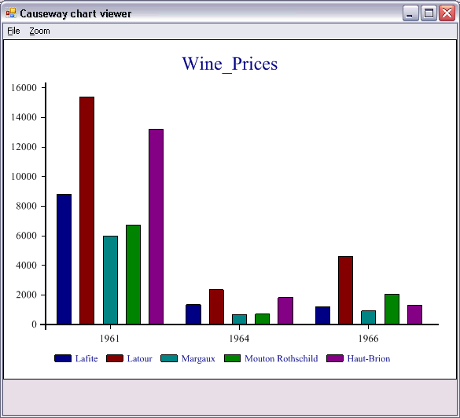
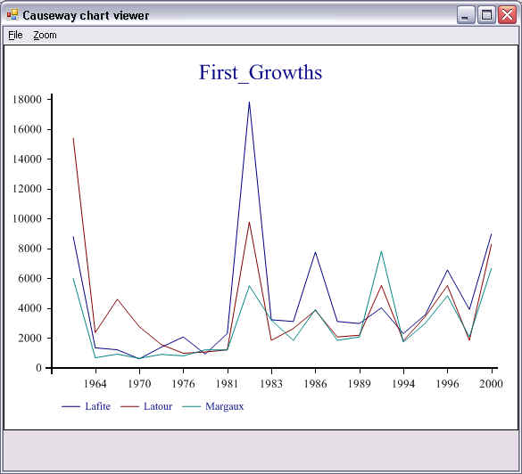

Included with Dyalog APL is the SharpPlot graphics library which is part of the RainPro graphics package..
The Session includes a button which calls SharpPlot to generate graphical pictures of the contents of the Current Object (identified by the name under or to the left of the cursor).
For example, if you have a numerical matrix in a variable called MAT, you can plot it by first positioning the cursor on the name MATin the Session window, and then clicking the SharpPlot button in the Session toolbar.
The charting function can plot variables with the following data structures:
Wine_Prices 1961 1964 1966 Lafite 8800 1342 1210 Latour 15400 2357.5 4600 Margaux 5980 672.5 920 Mouton Rothschild 6710 713 2070 Haut-Brion 13225 1840 1323

First_Growths 1961 1964 1966 1970 1975 1976 1978 ... Lafite 8800 1342 1210 605 1380 2070 920 ... Latour 15400 2357.5 4600 2760 1552 978 1058 ... Margaux 5980 672.5 920 632 900 800 1208 ...

The SharpPlot Wizard is called by clicking on the SharpPlot button in the Session toolbar. The button has a Select callback which runs the function ⎕SE.Chart.DoChart. This runs ⎕SE.Chart.Do which constructs and then runs a function named ⎕SE.Chart.MyChart.
⎕SE.Chart.MyChart uses an instance of the SharpPlot graphics class to produce a chart of your data, which it saves as a temporary file. It then calls the SharpPlot viewer to display the file on your screen. SharpPlot can also be started using the ]chart user command.
SharpPlot is a library of graphical subroutines, (originally written in APL and machine-translated into C#) which is implemented as a .Net Namespace named Causeway and supplied in the sharpplot.dll in the Dyalog program directory.
Although ⎕SE.Chart.MyChart is overwritten by successive uses of the graphical button, it is deliberately not erased each time. This allows you to use MyChart as a simple template to develop your own custom graphics function.
The image is stored in Microsoft Enhanced Metafile Format in a temporary file whose name and location are generated automatically. The system does not delete the temporary file after use. For further details, See GetTempFileName in the Windows documentation..
The default program used to display the EMF file is SharpView.exe. You can opt to use a different EMF viewer by setting the Charts\ViewCMDregistry key to name another program, such as Windows Picture and Fax Viewer.
An attempt to plot the contents of a variables with an unsupported data structure (see above) is handled entirely by error trapping and will result in an error message box and perhaps messages in the Status window.